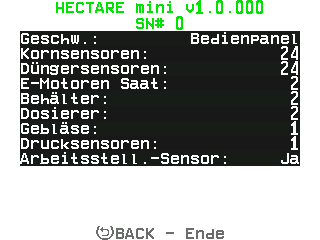
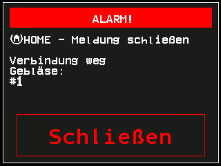
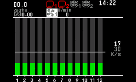
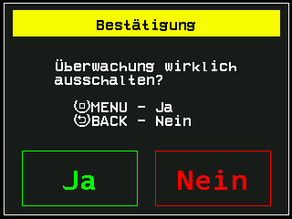

Profil und Verbindungen prüfen
Die erste Prüfung nach dem Einbau eines Hectare Mini – stimmt das Profil mit der Maschine überein, antwortet jedes Gerät, wird jeder Sensor überwacht – als Ablauf mit dem, was der Bildschirm bei jedem Schritt zeigt.
Das Panel überwacht nur die Geräte, die sein Profil aufführt. Meist werden Systeme mit bereits eingerichtetem Profil geliefert; prüfen Sie trotzdem, bevor Sie einen Parameter einstellen, ob es zur Maschine passt und ob jedes Gerät antwortet. Für diese Prüfung brauchen Sie keinen Zugangscode.
1. Profil prüfen
Schließen Sie alle Geräte an das Panel an und versorgen Sie sie gemäß dem Schaltplan im Datenblatt des Systems mit Strom.
Halten Sie „UP“ gedrückt und schalten Sie das Panel ein. Das Logo erscheint, danach die Profilansicht. Lassen Sie die Taste los.

Die Profilansicht beim Start. Lesen Sie die Profilansicht von oben:
- die Bezeichnung des Panels mit der Softwareversion, in Grün, und SN# mit der Seriennummer;
- die Zeile „Geschw.“ mit der Anschlussart des Geschwindigkeitssensors: „Bedienpanel“, „Eingangsmod.“ oder „Eingangsmodul(2)“;
- jede Geräteart im Profil mit ihrer Anzahl, oder „Ja“ bei einem Gerät, das nur einmal vorkommt, etwa dem Arbeitsstellungssensor.
„UP“ und „DOWN“ scrollen die Liste, wenn sie länger ist als der Bildschirm.
Vergleichen Sie die Liste mit der Maschine und dem Schaltplan.
Warten Sie, bis unten der Hinweis „BACK - Ende“ erscheint – das Panel zeigt ihn, sobald die Geräte geantwortet haben, spätestens nach 15 Sekunden. Drücken Sie „BACK“. Der Startbildschirm öffnet sich.
Passt das Profil nicht zur Maschine, richten Sie es zuerst ein: Profil einrichten.
2. Prüfen, ob jedes Gerät antwortet
Warten Sie auf dem Startbildschirm einige Sekunden. Erscheint kein Fenster „Verbindung weg“, hat das Panel alle Geräte des Profils gefunden.

Antworten mehrere Geräte einer Art nicht, listet ein Fenster alle ihre Nummern auf – hier die Drucksensoren 1 bis 3:

3. Prüfen, ob jeder Sensor überwacht wird
Ein Sensor außer Überwachung wird gar nicht überwacht. Seine Anzeige zeigt das blinkende graue Zeichen (nicht überwacht) oder !!!! anstelle des Wertes; unter einer Diagrammsäule zeigt sie ein weißes Feld mit ! – siehe Anzeigen.

Gibt es einen solchen Sensor, nehmen Sie ihn in die Überwachung:
Halten Sie auf dem Startbildschirm „MENU“ gedrückt, bis die Geschwindigkeitsanzeige einen weißen Hintergrund hat. Das Panel ist im Sensoreinstellmodus. Lassen Sie die Taste los.

Der Sensoreinstellmodus, der Geschwindigkeitssensor ist gewählt. Drücken Sie „DOWN“ (oder „UP“), bis der nicht überwachte Sensor gewählt ist. Ein Kornsensor ist gewählt, wenn seine Nummer unter der Säule einen weißen Hintergrund hat.

Der Gebläsesensor ist gewählt; Kornsensor 11 unter dem Diagramm ist gewählt. Drücken Sie „PLUS“. Das Panel fragt, ob Sie sicher sind; drücken Sie „MENU“ für „Ja“. „BACK“ antwortet mit „Nein“.

Die Frage, bevor die Überwachung eines Sensors geändert wird. Wiederholen Sie die Schritte 2 und 3 für jeden nicht überwachten Sensor. Solange Sie in diesem Modus bleiben, kommt die Frage nur beim ersten Mal.
Drücken Sie „BACK“, um den Sensoreinstellmodus zu verlassen.
Die Überwachung eines Sensors einzuschalten heißt in dieser Anleitung, einen Sensor in die Überwachung zu nehmen. Mehr dazu: Sensor in die Überwachung nehmen oder herausnehmen.
Das Ergebnis
Jeder Sensor muss überwacht werden, und keine Anzeige darf ein rotes Kreuz zeigen – das Zeichen für ein Gerät, das nicht antwortet.
Ist alles in Ordnung, zeigt der Startbildschirm jedes Gerät im normalen Grau, ohne rotes Kreuz und ohne das Zeichen für nicht überwacht:

Machen Sie dann mit den Einstellungen weiter: Inbetriebnahme.
Ihre Maschine tut etwas, das diese Seite nicht beantwortet? Schreiben Sie an support@agriwelt.com — es antwortet ein Ingenieur.